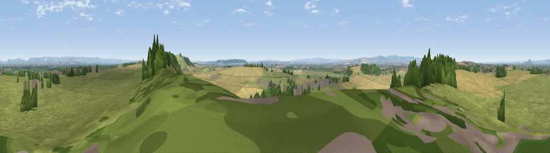

Viewpoint near Stawell
#9156 in England · top 28% of its area beats it · near StawellWhere it is
The exact computed spot (ST 36925 39075). Click the marker for map links.
The view, rendered

A 360° render of this exact spot computed from the terrain model, tree cover and land cover — summer colours, afternoon light, calibrated against photographs of famous viewpoints. Real trees, hedges and buildings will differ in detail.
The panorama
Grey silhouette: terrain skyline in each direction (720 bearings, Earth curvature and refraction included). Dashed green: skyline with trees (+15 m) and buildings (+8 m) as obstacles. Blue strip: how far the ground is visible on each bearing.
Where the view opens
Wedge length = distance to the farthest visible ground on that bearing (vegetation-aware). Rings at 10, 25 and 50 km.
What fills the view
51% grassland · 38% cropland · 9% woodland · 1% built-up
Angular shares of the visible panorama (visual magnitude), not map area. Landscape diversity 0.44 (0–1 Shannon).
Key numbers
More beautiful places nearby
The staircase of upgrades: each row has a higher view potential than everything closer. Driving times are estimates from straight-line distance, calibrated against real road routing — check an actual route before setting out.
| Place | Direction | Drive | Score |
|---|---|---|---|
| Viewpoint near Edington | ESE · 1 km | ~4 min | 66.8 |
| Socombe Hill | ESE · 2 km | ~5 min | 76.4 |
| Brent Knoll | NNW · 12 km | ~23 min | 77.7 |
| Crook Peak | N · 17 km | ~29 min | 78.2 |
| Viewpoint near Compton Bishop | N · 17 km | ~30 min | 78.6 |
| Viewpoint near Axbridge | NNE · 18 km | ~30 min | 79.2 |
| Bleadon Hill [Loxton Hill] | N · 18 km | ~31 min | 79.6 |
| Cothelstone Hill | WSW · 19 km | ~32 min | 82.1 |
51.14745, -2.90312 · source: screening · position refined by local search. Computed location — check access rights before visiting.